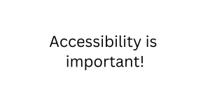

Accessible Web Page Example
This is a sample web page to teach HTML accessibility principles.
Usability
Skip Links
Skip links are navigational links that allow users to skip repetitive content and jump to the main content of a web page. These are special links that can be hidden from view but are extremely useful for screen reader users. If you have a complex site, you may want to add more skip links, not only to the main content. (W3)
Can you find the skip link on this page?
Keyboard-Only Navigation
All interactive elements and content should be fully accessible and operable using a keyboard alone. Well-structured HTML and keyboard-friendly focus styles are necessary. The ability to navigate and interact with all elements should be able to be done without requiring a mouse.
- Keyboard traps can become a huge issue. They happen when a user gets struck in a particular part of a web page or interface and cannot navigate away using the keyboard.
- Test HTML by navigating through the content with the Tab key, highlighting active elements as you go. Reverse direction using Shift + Tab.
- Avoid keyboard traps by testing your content and provide keyboard navigation options to escape or continue through the interface.
Pause and check: Is this page operable by just a keyboard? Test it out!
Visible and Predictable Focus
Clearly visible and predictable keyboard focus indicators are essential. They help users understand where they are in the interface. Customize and style focus indicators to meet user needs while also maintaining a strong contrast with the background.
External/Embedded Resources
Any resources such as third-party widgets, videos, or iframes in web content must also be accessible and not compromise the overall usability and user experience.
Help Information
Any help information within the web page should be in a consistent location throughout.
Single-Point Operation
Always provide a single-point gesture for operation of content. Provide controls to achieve the same result as a path based or multipoint gesture.
Time Limits
Users should be given adequate time to interact with content wherever possible. If time limits exist, they should be able to be extended or paused. Disabling time limits is better than customizing the length of time limits, which is better than requesting more time before a time limit occurs. (W3)
Character-Only Shortcut Keys
Do not implement character-only shortcut keys. If absolutely necessary, allow them to be edited.
Pointer Cancellation
Pointer cancellation should be predictable and consistent throughout the content.
- addEventListener("pointercancel", (event) => {}); onpointercancel = (event) => {};
- Avoid activating any functions when a down-event is triggered.
Status Messages and Errors
Any status messages and errors are to be implemented programmatically. This means that they are available to the user in text, and the user is notified when they appear.
Memorization and Reuse of Information
Users should be able to login and complete fields without memorization. The ability to reuse previously entered information should be possible. (Exceptions: re-entering information is essential, the information is required for security of content, or previously entered information is no longer valid.) Information can be:
- Auto-populated
- Available for the user to select
Focus Visible
Any meaningful content should be focusable.
WCAG
WCAG stands for Web Content Accessibility Guidelines. Our aspects and checklists center around conformance to these guidelines.
Implementing WCAG in HTML
WCAG applies to HTML in the sense that it provides a framework and standards for creating web content that can be used by a wide range of people, including those with disabilities. Refer to our content checklists and the WCAG when creating accessible content.
Real Text
Defining Language
Define the language of the content:
- Language of page: <html lang="en">
- Language of parts: <p>You'd say that in Chinese as <span lang="zh-Hans">数字无障碍</span>.</p>
Selectable and Accurate Text
All text should be selectable and accurate. Do not include images of text. Always duplicate the text in surrounding content, if an image of text is essential.
For example, notice how this text is not selectable:
But this example is selectable:
Accessibility is important!
Semantic Elements
You can make an element look like anything, but semantic elements give meaning to your content and to the users that interact with it. In HTML, the <h1> element is a semantic element, which gives the text it wraps around the role (or meaning) of a top-level heading on your page.
Screen readers can use semantic elements as a signpost to help visually impaired users navigate a page.(MDN)
Headings
Descriptive Headings
Headings should describe the content that follows, making it easier for all users to understand the content's organization.
Heading levels should be nested logically. <h1> representing the main title, followed by <h2> for subsections, <h3> for sub-subsections, and so on.
A consistent and coherent heading structure throughout helps for better accessibility and SEO.
One Heading Level 1
There should only be one <h1> per HTML document, serving as the main title or header. Don't use more than one <h1>!
Accessible Heading Level Example
This is incorrect:
<h1>
<h3>
<h2>
<h4>
This is correct:
<h2>
<h3>
<h4>
<h2>
<h2>
<h3>
Metadata
Metadata elements such as <title> and <meta> can provide essential information about the document's content. They can also improve accessibility and SEO. <meta name="description"> can provide a brief description of the page's content.
Pause and check: Inspect this page. Are there descriptive metadata elements?
Tables
Do not create fixed width tables.
Table Captions
A <caption> element can help describe the table's purpose. They are highly recommended but not required.
Table Headers
A table in HTML consists of table cells inside rows and columns.
- Header cells are defined by <th> tags. Column headers should be in the <thead> tag.
- Table cells are defined by <td> tags. Table cells and data should be in the <tbody> tag.
- Each row starts with a <tr> tag.
- Header cells should be visually distinct from data cells.
Scope
Specifying scope in a table can improve the user experience. Scope can be specified to provide necessary information about the cells related to a header.
Header rows can also be defined outside of the <thead> tag. Use <th scope = "row"> instead.
Accessible Simple Table Example
Input:
<table>
<caption>
Simple Table Example
</caption>
<thead>
<tr>
<th scope="col">Whale</th>
<th scope="col">Type</th>
<th scope="col">Habitat</th>
<th scope="col">Whaling History</th>
</tr>
</thead>
<tbody>
<tr>
<th scope="col">Fin Whale</th>
<td>Baleen</td>
<td>Open seas</td>
<td>Recent</td>
</tr>
<tr>
<th scope="col">Humpback Whale</th>
<td>Baleen</td>
<td>Coastal (in breeding season)</td>
<td>Ancient</td>
</tr>
<tr>
<th scope="col">Killer Whale</th>
<td>Toothed</td>
<td>Open seas, coastal</td>
<td>Occasional</td>
</tr>
<tr>
<th scope="col">Sperm Whale</th>
<td>Toothed</td>
<td>Open seas</td>
<td>Intermediate</td>
</tr>
</tbody>
</table>
Output: (border added)
| Whale | Type | Habitat | Whaling History |
|---|---|---|---|
| Fin Whale | Baleen | Open seas | Recent |
| Humpback Whale | Baleen | Coastal (in breeding season) | Ancient |
| Killer Whale | Toothed | Open seas, coastal | Occasional |
| Sperm Whale | Toothed | Open seas | Intermediate |
Lists
Lists group related items. Lists are created using list tags and list item tags. There are three types of lists in HTML.
Ordered Lists
An ordered list is used when order or number of items matters. They start with the <ol> tag. Each list item also starts with the <li> tag. The list items will be marked with numbers by default.
Ordered List Example
Input:
<p>The top 5 biggest whales in the ocean are:</p>
<ol>
<li>Blue Whale (100 Feet)</li>
<li>Fin Whale (90 Feet)</li>
<li>Sperm Whale (60 Feet)</li>
<li>North Atlantic Right Whale (60 Feet)</li>
<li>Bowhead Whale (59 Feet)</li>
</ol>
Output:
The top 5 biggest whales in the ocean are:
- Blue Whale (100 Feet)
- Fin Whale (90 Feet)
- Sperm Whale (60 Feet)
- North Atlantic Right Whale (60 Feet)
- Bowhead Whale (59 Feet)
Unordered Lists
An unordered list starts with the <ul> tag. Each list item starts with the <li> tag. By default, the list items will be marked with bullets.
Unordered List Example
Input:
<p>Humpback Whale Diet</p>
<ul>
<li>Krill</li>
<li>Herring</li>
<li>Salmon</li>
<li>Sand Lance</li>
<li>Phytoplankton</li>
</ul>
Output:
Humpback Whale Diet
- Krill
- Herring
- Salmon
- Sand Lance
- Phytoplankton
Definition Lists
A definition lists starts with the <dl> tag. The term in the list is defined with the <dt> tag. The definition is defined with the <dd> tag.
Definition List Example
Input:
<p>Types of Whales</p>
<dl>
<dt>Blue Whale</dt>
<dd><p>The blue whale is the largest animal on Earth, known for its enormous size and distinctive blue-gray color.</p></dd>
<dt>Gray Whale</dt>
<dd><p>Gray whales are known for their long migrations between their feeding and breeding grounds.</p></dd>
<dt>Humpback Whale</dt>
<dd><p>Humpback whales are known for their acrobatic behavior, often breaching the water and slapping their tails.</p></dd>
</dl>
Output: (with added emphasis)
Types of Whales
- Blue Whale
-
The blue whale is the largest animal on Earth, known for its enormous size and distinctive blue-gray color.
- Humpback Whale
-
Humpback whales are known for their acrobatic behavior, often breaching the water and slapping their tails.
- Gray Whale
-
Gray whales are known for their long migrations between their feeding and breeding grounds.
Mult-Level Lists
Multi-level lists in HTML can get complicated quickly. Don't use more than 3 levels in your lists. If more levels are needed, consider creating an accessible table or breaking your content into more heading levels.
Links
Adjacent Links
Adjacent links should be grouped as a single link.
Visually Distinct Links
Links should have descriptive link text and be visually distinct from surrounding text. Never use link text like “Click Here” or “Home Page” because these links are not descriptive. If a link appears multiple times throughout the content, use the same link text every time.
Accessible Link Example
<p>I'm creating a link to the <a href="https://www.fisheries.noaa.gov/whales#overview">NOAA Fisheries Overview of Whales homepage</a>.
Sensory Characteristics
Examples of sensory characteristics:
- Visual Position
- Sound
- Color
- Shape
- Size
- Orientation
Reflow
Web content should be able to adapt and reorganize itself to fit different screen sizes, orientations, and user settings without requiring horizontal scrolling. Responsive web design provides a better user experience for everyone.
Content should be dynamic and assigned with accessibility in mind. Do not design content with fixed positions and sizes. Dynamic content should be designed with keyboard accessibility, proper focus, and alternative content for screen readers.
Color Contrast
Color contrast makes content accessible to users with low vision or color vision deficiencies. Use color combinations that are easy to see and differentiate.
Use the WebAIM Contrast Checker to check for appropriate color contrast.
Information Independent of Color
Information conveyed by color alone is inaccessible. Always use more than one sensory characteristic to communicate meaningful information.
Color Contrast Example
Pause and check: Using the WebAIM contrast checker, what does it say about these color combinations?
Visual Content
Alternative Text
Include descriptive alt text for images and graphics. To create a tooltip for an image, use the title attribute. To mark an image as decorative, leave the ALT attribute empty, signaling a screen reader to skip over the image. Example: <img src="whale.jpg" alt=“Whale breaching water">
Alt text should not be repetitive of surrounding content, nor add additional information.
Functional Images
Functional images are used to initiate actions rather than to convey information (W3C). For example, use “Search” rather than “Magnifying lens” or “BYUI Homepage” rather than “BYUI Logo”.
ARIA
What is ARIA?
ARIA stands for Accessible Rich Internet Applications. It is a set of attributes that can be added to HTML elements to improve accessibility, particularly for dynamic and interactive web content.
Don't use ARIA when:
- Native HTML elements are available
- Native HTML elements are designed with accessibility in mind and are more reliable for screen readers and other assistive technologies. Only use ARIA when there is no equivalent native HTML element or attribute that can provide the required accessibility semantics.
- For example, don't use ARIA to make a <div> element behave like a button when you can simply use the <button> element.
- Avoid using roles or attributes that are not relevant to the content or that conflict with native semantics.
- You're in an incompatible or unsupported environment
- Some environments, like email clients, social media platforms, or certain mobile apps, may not fully support ARIA. When your content will be distributed in such environments, consider alternatives to ARIA for ensuring accessibility.
- If you don't have the means to thoroughly test how your ARIA implementation works with various assistive technologies and screen readers, it's better to rely on native HTML elements and attributes.
- There's no user benefit
- If adding ARIA does not improve the accessibility or usability of your content for these users, it may be unnecessary.
- Adding ARIA roles or attributes that don't provide meaningful enhancements can lead to confusion and potentially reduce accessibility. ARIA should be used sparingly and with a clear purpose.
The first rule of ARIA is to never use it! ARIA can be complex, especially when used to build custom widgets or interactive components. It's important to thoroughly understand how ARIA works and to carefully test and maintain ARIA-enhanced components. In some cases, it may be more practical to use accessible, pre-built libraries or frameworks that handle ARIA for you.
ARIA Example
HTML does not inherently provide a universally accessible element for text box labels. To address this, leveraging ARIA emerges as a valuable solution, enhancing the inclusivity of form interactions by ensuring all users receive clear guidance on the information to input into the form box.
Input:
<input type="text" placeholder="5-digit zipcode" id="txtbox" />
Output:
ARIA Roles and Attributes
ARIA Roles
Roles are like “job titles” for elements on a web page. ARIA roles give elements specific roles or identities, helping assistive technologies understand their purpose. Remember to not use ARIA roles if native elements exist.
ARIA Attributes
Attributes are like “additional details” that provide more information about elements. They can describe the state, properties, or labels of an element.
Examples
For example, an ARIA attribute might indicate if a button is disabled or provide a custom label for an image. They can enhance accessibility by adding extra information.
Testing
Manual Testing
Keyboard Navigation
Navigate through your website using only the keyboard, using the Tab and the Shift + Tab keys. Make sure you can activate interactive elements with the Enter or Space key (<a> elements cannot be activated with the Space key.) Use the up and down keys to navigate between the different options of a <select> element.
Be aware that certain input types have popups that can work differently between browsers. Test your HTML in multiple browsers. For more information, check out the MDN Input Element page.
Screen Reader Testing
Test your HTML with a screen reader, like NVDA, which is available for free. Different screen readers can interact with content in several ways, so make sure to also check out other options like Windows Narrator, VoiceOver, and JAWS. Screen reader users experience content differently. Having your HTML be keyboard navigable is essential. Design with screen reader usage in mind, so the HTML is scannable and skippable, images have accurate and descriptive alt text, and links are descriptive.
Semantic Structure
Using semantic elements is crucial for good keyboard navigation. Always use semantic elements. If you remove formatting, does the content still make sense in a logical order?
Color Contrast
Test for sufficient color contrast. Use the WebAIM Contrast Checker.
Alternative Text
Make sure every image and graphic has alt text or has been marked as decorative. Functional images should have alt text that conveys the function.
Link Text
Make sure adjacent links are grouped as a single link. Links that go to the same place have the same descriptive text consistently throughout the content. All links should be visually distinct from surrounding text.
Automatic Testing
WAVE Tool
The Web Accessibility Evaluation Tool can identify many accessibility errors automatically, but a person must still identify issues manually. It is a tool is a free extension you can download for free on Chrome, Firefox, and Edge. Navigate through the information provided to resolve errors and make changes to your HTML. For more information, visit the WebAIM WAVE Help page.
HTML Validators
An HTML validator can be useful to validate elements for any syntax or formatting errors. Many validators are available for free online.
Web Developer Extension
The Web Developer extension is useful as it adds various web developer tools to a browser. The extension is available for Chrome, Edge, Firefox, and Opera.